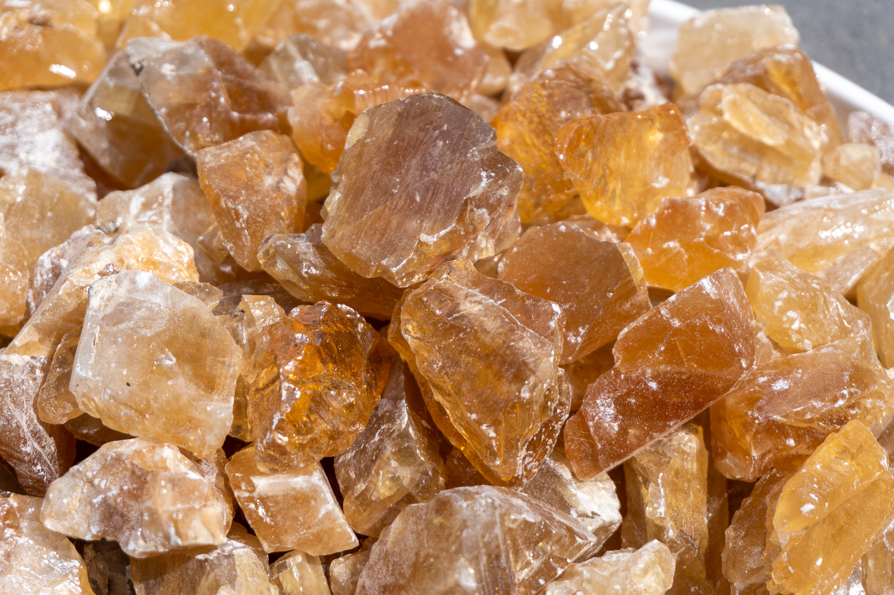

New here?

New to rockhounding and don't know where to start? Not to worry, we will show you the ropes. Click below to head over to our "Getting Started" guide
Getting StartedRocks & Minerals In West Virginia

West Virginia rockhounding maps to hunt for crystals, gemstones, minerals, and ores. West Virginia offers unique rockhounding experiences, with popular sites like the Spruce Knob area, where you can find beautiful quartz crystals, and the Nuttall Sandstone Formation, known for its plant fossils. The state is also home to interesting minerals, including garnet, epidote, and pyrite, making it a great destination for rockhounding enthusiasts.
Sponsored Dig Site

Own a digsite you would like to advertize in West Virginia? Contact us for more information about being our sponsor of the month! Email sponsors@rockhounding.org for more information.
Advertise With Us
Please always bring appropriate attire and do research before venturing out to rock hunt and crystal hunt. Also, be sure to verify that the location you want to hunt at is available for public access. Rockhounding.org does our best to verify, but it is your responsibility to verify as well because sometimes things change. We are not liable for any actions you take from the information you find on this site.
Snacks & Hydration

Energy Bars
Stay energized with the best energy bars for your rockhounding adventures.
Our Favorites

Must Have Rockhounding Tools


Keeping accurate records of Rockhounding & Gemstone Hunting Locations is a community effort! Know of a good spot that is missing from our maps? Feel free to submit it below. Thank you for your contributions to the rockhounding community!
Popular Rocks, Crystals, & Gemstones In West Virginia
-
Bituminous Coal
West Virginia is known for its rich coal deposits, with bituminous coal being the most abundant. This black, carbon-rich mineral is used as a fuel source and can be found in many areas across the state.
Read More -
 Malachite
MalachiteMalachite, a vibrant green copper carbonate mineral, can be found in West Virginia's copper mines, particularly in the state's eastern regions, where it forms in the oxidation zones of copper deposits.
Read More -
 Sulfur
SulfurYellow sulfur crystals can be found in West Virginia, particularly in the state's western regions, where they occur in sedimentary rock formations such as limestone and gypsum.
Read More -
 Amethyst
AmethystAmethyst, a purple variety of quartz, can be found in West Virginia, especially in the state's eastern regions, where it occurs in pegmatite and quartz veins in metamorphic rocks.
Read More -
 Barite
BariteBarite, a heavy white mineral composed of barium sulfate, can be found in West Virginia, particularly in the state's northeastern regions, where it occurs in veins associated with lead and zinc deposits.
Read More -
 Brachiopod Fossils
Brachiopod FossilsWest Virginia is home to a variety of ancient marine fossils, including brachiopods. These fossils can be found in the state's sedimentary rocks, particularly in limestone and shale formations.
Read More -

Calcite
Calcite, a common calcium carbonate mineral, can be found in various colors in West Virginia, particularly in the state's limestone and dolomite deposits, where it forms crystals and cave formations.
Read More -
 Iron Oxide
Iron OxideIron oxide, responsible for the red and brown hues of many rocks, can be found in West Virginia, particularly in the state's sedimentary rocks and near iron deposits, where it forms as a weathering product of iron minerals.
Read More -
 Kyanite
KyaniteKyanite, a blue aluminum silicate mineral, can be found in West Virginia, particularly in the state's eastern regions, where it occurs in metamorphic rocks formed under high pressure and temperature conditions.
Read More -
 Trace Fossils
Trace FossilsTrace fossils, such as ancient burrows and tracks left by prehistoric creatures, can be found in West Virginia's sedimentary rocks, especially in shale and sandstone formations that preserve these unique geological records.
Read More
Popular Rock Hunting Areas In West Virginia
-
 New River Gorge
New River GorgeNew River Gorge, a stunning national park and preserve, offers rockhounds the chance to find fossils, quartz, and iron oxide pigments. The area's sedimentary rocks provide a rich history of the ancient environments that once thrived here.
Read More -
Seneca Rocks
Seneca Rocks, an iconic landmark in West Virginia, features unique quartzite formations perfect for rockhounding. Visitors can also discover a variety of minerals and fossils in the surrounding area, showcasing the region's complex geological past.
Read More -
Droop Mountain Battlefield State Park
Droop Mountain Battlefield State Park, the site of a historic Civil War battle, offers rockhounding enthusiasts the opportunity to search for fossils and minerals. The park's sedimentary rocks preserve a rich record of ancient life and environments.
Read More -
Smoke Hole Caverns
Smoke Hole Caverns, an underground wonder in West Virginia, is an ideal location for rockhounds interested in calcite and other cave minerals. The caverns showcase stunning formations created by the slow deposition of minerals over thousands of years.
Read More -
Greenbrier River
The Greenbrier River, one of West Virginia's longest rivers, offers rockhounding opportunities for enthusiasts to find various minerals, including quartz and calcite. The river's banks and gravel bars are prime locations for uncovering geological treasures.
Read More -
Coopers Rock State Forest
Coopers Rock State Forest, a popular destination for outdoor enthusiasts, offers rockhounding opportunities to discover minerals and fossils. The forest's sandstone cliffs and boulder fields are excellent places to search for geological treasures.
Read More
Geology of West Virginia
West Virginia's geology is characterized by sedimentary rocks, including limestone, shale, and sandstone, which were formed in ancient shallow seas that once covered the region. The state is part of the Appalachian Plateau and is known for its rugged, mountainous terrain, including the Allegheny Mountains.
West Virginia is famous for its coal resources, which have played a significant role in the state's economy and history. The state is also home to a variety of minerals and gemstones, such as quartz, garnet, and calcite, as well as diverse fossil deposits, including plants, marine invertebrates, and ancient reptiles.
Rockhounding in West Virginia offers a variety of opportunities, from exploring the state's rich mineral resources and gemstone deposits to hunting for fossils in exposed rock formations and experiencing the unique geology of the Appalachian Plateau.